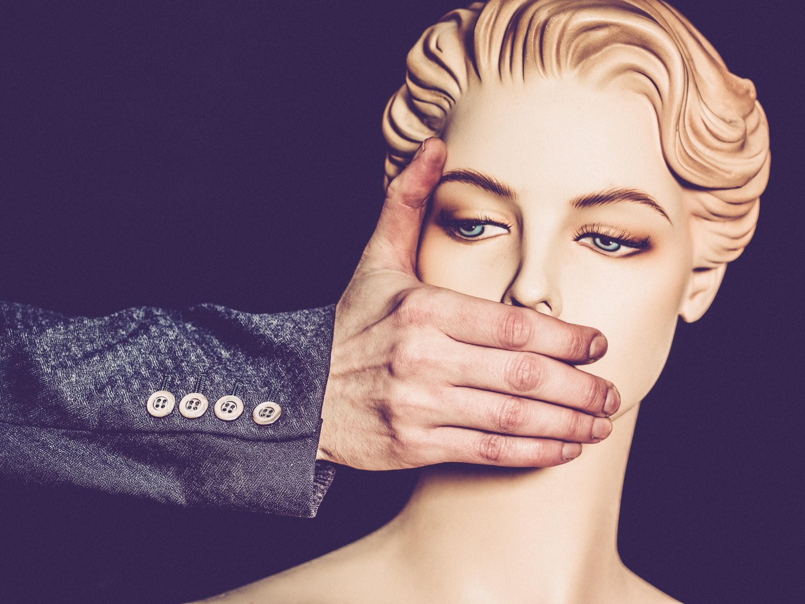
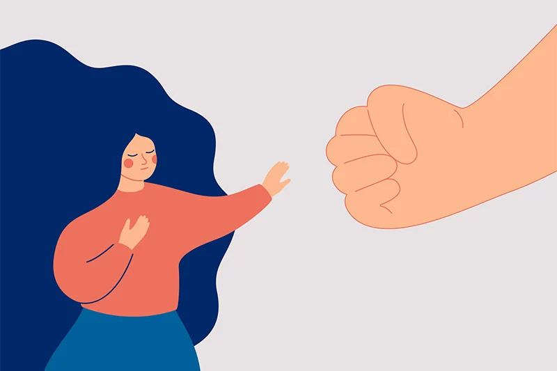

A proposta busca conscientizar e mobilizar a sociedade para o enfretamento à misoginia enquanto raiz de todas as formas de violência contra as mulheres.
As crescentes discussões sobre direitos, garantias e representatividade das minorias sociais revelam novos conceitos e denominações, que surgiram com o intuito de explicar as origens do tratamento desigual que certos indivíduos recebem. No que tange às questões de gênero, a misoginia é um termo oriundo da Grécia antiga que voltou à luz para conceituar as relações nocivas que ocorrem entre homens e mulheres.
Misoginia é a repulsa, desprezo ou ódio contra as mulheres. Esta forma de aversão à mulher é centrada em uma visão sexista, que coloca a mulher em uma categoria de subalternidade em relação ao homem.
Etimologicamente, a palavra "misoginia" surgiu a partir do grego misogynia, ou seja, a união das partículas miseó, que significa "ódio", e gyné, que se traduz para "mulher". Um indivíduo que pratica a misoginia é considerado misógino. O antônimo de misoginia é conhecido por filoginia, o amor, afeto, apreço e respeito pelo sexo feminino.
|  | O menosprezo ao gênero feminino é algo que atravessa a história da humanidade ao longo do tempo. Sua causa é em grande parte por conta de um sistema denominado como patriarcal, ou seja, uma estrutura de sociedade fundada no poder masculino.
Podemos perceber a misoginia em diversos povos da antiguidade, como na Grécia Antiga, cultura que teve grande importância na estruturação das sociedades ocidentais.
O célebre filósofo grego Aristóteles, por exemplo, afirmava que as mulheres são "homens imperfeitos" e que elas devem se sujeitar a eles, pois são "inferiores". Podemos ainda detectar traços misóginos em várias vertentes religiosas. |
| Com a misoginia a violência eclode em uma escala ascendente de gravidade, iniciando com as piadas depreciativas, assédios, abusos, estupros e culmina com o feminicídio. As bases misóginas do pensamento ocidental geram a banalização da violência ao feminino que se estende pelos vários aspectos da vida da mulher, como o social, o psicológico, econômico e político, tornando difícil identificar os traços nocivos mais sutis. Desta forma, homens e mulheres reproduzem atos e expressões machistas quase que de forma inconsciente, com a mulher adotando, muitas vezes, como mecanismo de sobrevivência na cultura opressora, uma aparente passividade que não deve ser entendida como a aceitação das situações que lhe ferem a dignidade, mas sim como um mecanismo de defesa e sobrevivência. |
 |
Por um acaso você já ouviu falar que “em briga de marido e mulher são se mete a colher”? Pois essa é uma frase que explicita um dos traços da cultura brasileira, a banalização da violência de gênero.
O mapa da violência de 2015 colocou o país na quinta posição em casos de assassinatos de mulheres, com uma média de 4,8 mortes a cada 100 mil. Já os dados do Fórum Brasileiro de Segurança Pública (FBSP), divulgados em 2017, revelam outro fato chocante: a cada onze minutos uma mulher é estuprada no país.
Com intuito de enfrentar a violência de gênero, em 2006 surgiu a Lei Maria da Penha, para combater a violência doméstica. Em 2009, a Lei 12.015 alterou o Título VI do Código Penal para Crimes contra a dignidade sexual, unificando o estupro e o atentado violento ao pudor, com a aplicação de uma única pena. E em 2015, foi sancionada a Lei 15.104 que define o feminicídio como um crime hediondo – crimes de extrema gravidade, cujas penalidades são mais rigorosas. Em 2018, foi sancionada a Lei 13.718 que trata do crime de importunação sexual: “realização de ato libidinoso na presença de alguém de forma não consensual, com o objetivo de satisfazer a própria lascívia ou a de terceiro”, assim como tornou crime a divulgação de cenas de estupro, nudez, sexo, pornografia sem o consentimento da outra parte envolvida.